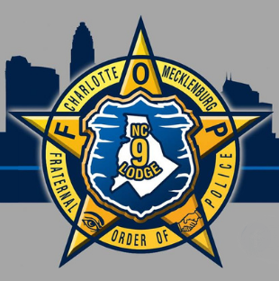
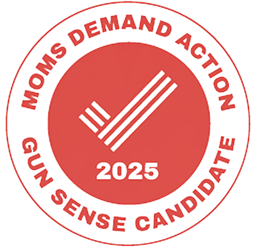
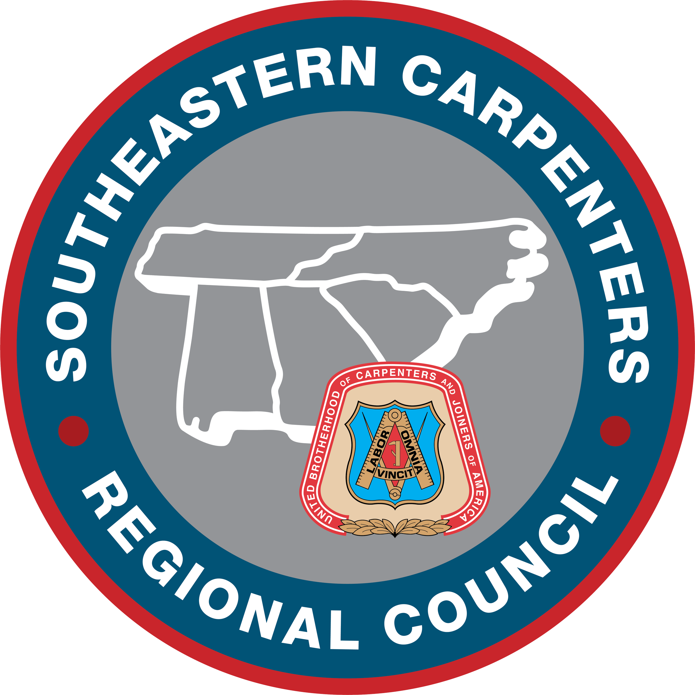
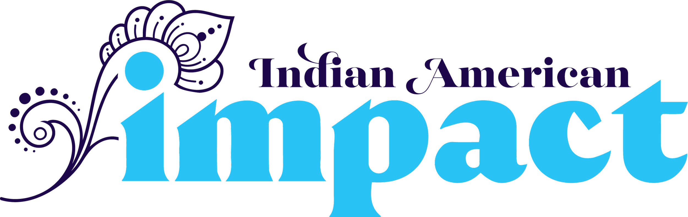
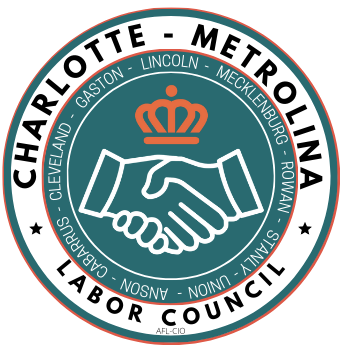
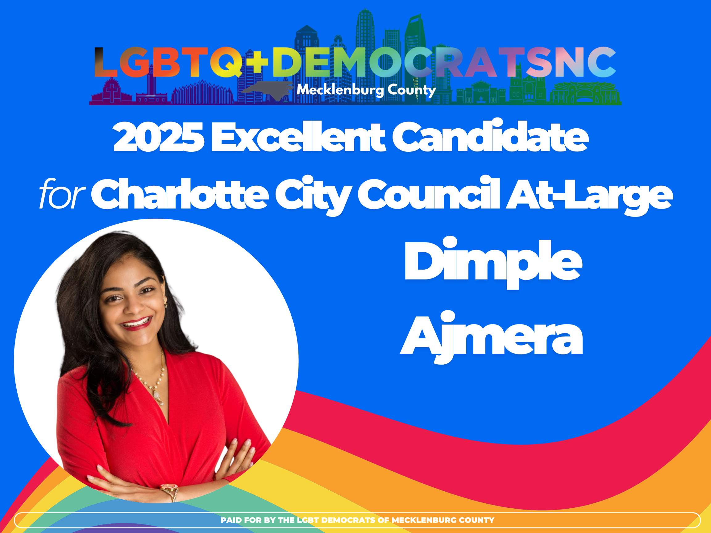

Organizational Backing


Endorsing Organizations & Unions
Trusted by first responders, labor unions, civic organizations, and local media. Click any logo to view high-resolution details and official websites.





